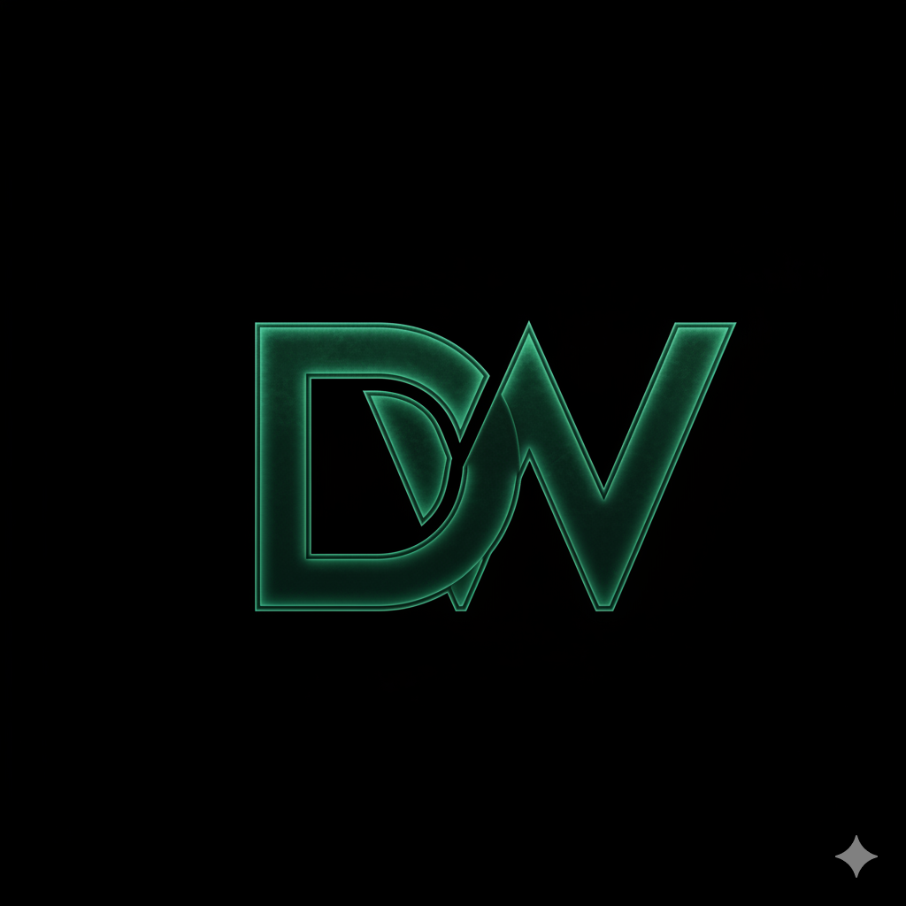

Back to ProjectsLightweight, socket-based network scanner optimized for Android / Termux — reliable & error-free.
A minimal, efficient network scanner built specifically for constrained mobile environments like Termux on Android. Uses raw sockets for fast port scanning, host discovery, and basic service detection without heavy dependencies.
Designed to be reliable even on low-power devices, with low memory usage and error handling for unstable mobile networks.